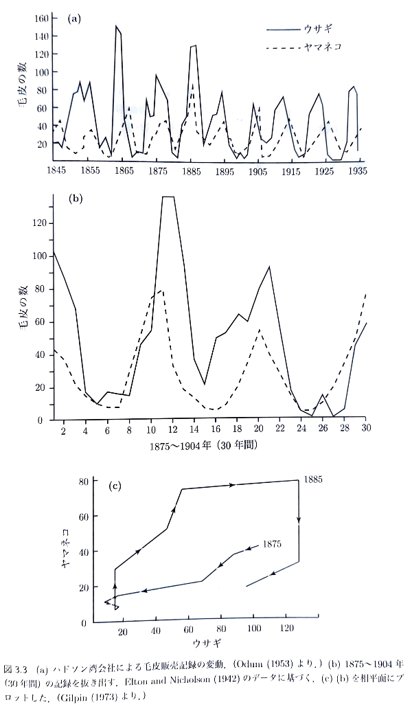

6. 捕食者・被食者モデル#
到達目標
常微分方程式の近似解法
常微分方程式が解析的に解けない場合に，数値的に解を近似する手法を理解する．
捕食者・被食者モデル
捕食者・被食者モデルを通じて，生態系における周期的な個体数変動のメカニズムを理解する．
相平面解析を用いて，解の安定性・閉軌道（周期運動）の性質を数理的に考察できるようになる．
キーワード
オイラー法，数値解
捕食者・被食者モデル
相平面解析
準備
anaconda を使用し，jupyter lab を起動する．
Documents（書類）/mathematical_studiesフォルダを開き，新規ノートブックを作成．ファイル名を
4_{学籍番号}_{氏名}.ipynbに変更（例：4_SI25999_香川渓一郎.ipynb）．
6.1. 差分近似#
6.1.1. 解けない微分方程式にどう立ち向かうか#
多くのモデル（例えば単振り子の非線形方程式）は解析解が存在しない．
⇒ 時間を細かく刻み，微分を差分に置き換えることで近似解を求める．
コンピュータの得意分野：繰り返し計算することで真の解に近い解（近似解）を得る．
6.1.2. 差分近似の考え方#
次の一般的な常微分方程式の初期値問題を考える．
導関数の定義
これを極限を取らずに有限の時間刻み幅 \(\varepsilon\) で妥協する．
とおけば，差分方程式の初期値問題
が得られる．
これは「次の時刻の値＝現在時刻の値＋単位時間あたりの変化量×時間刻み幅」を意味する． このようにして微分方程式に対応する差分方程式を得る手法をオイラー法（Euler method）と呼ぶ．
6.2. オイラー法の実装#
6.2.1. 指数的減衰（放射性崩壊）の例#
この問題の解析解は
差分方程式は
解析解と差分方程式から得た近似解を比較する．
プログラム
準備
import numpy as np
import matplotlib.pyplot as plt
from matplotlib import rcParams
rcParams['font.family'] = 'Hiragino Sans'
パラメタ設定
lam = 0.5
N0 = 10
dt = 0.2
t_max = 5
t = np.arange(0, t_max+dt, dt)
N = np.empty_like(t)
N[0] = N0
数値解と解析解の計算
for n in range(len(t)-1):
N[n+1] = N[n] - lam*N[n]*dt # オイラー近似
N_exact = N0*np.exp(-lam*t)
グラフのプロット
plt.plot(t, N_exact, 'k--', label='解析解')
plt.plot(t, N, 'o-', ms=3, label='オイラー法')
plt.title(f'dt={dt}')
plt.xlabel('t'); plt.ylabel('N(t)')
plt.legend(); plt.grid(True, alpha=0.3)
plt.savefig(f"ex1_dt={dt}.png")
plt.show()
Note
演習1
時間刻み幅\(dt\)の値を\(1, 0.1, 0.01\)のそれぞれについてグラフを作成し，\(dt\)が小さいほど数値解のグラフが解析解のグラフに近づくことを確認せよ．
6.2.2. ロジスティックモデルの例#
Note
課題1
上のロジスティックモデルに対して差分方程式を導出し，解析解とオイラー法に基づく近似解のグラフを作成せよ． プログラムは演習1のコードを参考にせよ．
なお，解析解は次で与えられる．
ただしパラメタは次の値を参考にせよ．
r = 0.02 # 成長率
Nmax = 1000 # 環境収容力
N0 = 10 # 初期個体数
6.3. 捕食者・被食者モデル#
6.3.1. 自然界に見られる振動現象#
アドリア海の魚数の変動
第一次世界大戦前:サバなどの食用魚に恵まれる．
第一次世界大戦中:漁師が兵士として出征し，漁業が停止する．
第一次世界大戦後:食用魚が獲れなくなり，一方でサメなどの肉食魚が増加していた．
同様の現象：プランクトンと魚，草食動物と肉食動物など．
ウサギとヤマネコの毛皮の数

1920年代にロトカ(Lotka)とヴォルテラ(Volterra)がこの現象を最初に数理的に説明した．
6.3.2. ロトカ＝ヴォルテラ方程式#
被食者（サバ，草食動物など）の個体数を \(x(t)\)，捕食者（サメ，肉食動物など）の個体数を \(y(t)\) とする．
要素 |
影響 |
数式表現 |
|---|---|---|
被食者の自然増殖 |
単独なら増える |
\(+\alpha x\) |
捕食による減少 |
捕食頻度 ∝ \(x\cdot y\) |
\(-\beta xy\) |
捕食者の増加 |
捕食成功 ∝ \(x\cdot y\) |
\(+\delta xy\) |
捕食者の自然減少 |
餌がなければ死ぬ |
\(-\gamma y\) |
\(\alpha,\beta,\gamma,\delta>0\)：正の定数．
捕食による効果が非線形項 \(xy\) で表される．
⇒ 線形でないため解析解を得ることは難しいが，相平面の考え方で定性的な解析が可能になる．
6.3.3. 平衡点の解析#
特徴的な点として，時間変化が止まる平衡点（\(\dot x=0, \dot y=0\)）を求める．
これを解くと平衡点\((x,y)=(x^*,y^*)\)は
の2点であることが分かる．
この点はそれぞれ
\((0,0)\)：両方絶滅
\((x^*, y^*)=(\frac{\gamma}{\delta}, \frac{\alpha}{\beta})\)：共存状態
を意味する．
6.3.4. 平衡点まわりの線形化（ヤコビ行列）#
2つの微分方程式の右辺をそれぞれ関数\(f(x,y), g(x,y)\)とおく．
この方程式系に対するヤコビアンは次のように得られる．
共存状態の平衡点\((x^*, y^*)=(\frac{\gamma}{\delta}, \frac{\alpha}{\beta})\)では
このヤコビ行列の固有値を求めると
となる． これは純虚数であるから周期軌道を表す． 従って非線形項が無視できるような平衡点近傍では円運動で近似できる．
6.3.5. 相平面の描画#
準備
import numpy as np
import matplotlib.pyplot as plt
from matplotlib import rcParams
rcParams['font.family'] = 'Hiragino Sans'
方程式の導入
def lv_rhs(x, y, alpha, beta, gamma, delta):
"""ロトカ＝ヴォルテラ方程式の右辺"""
dx = alpha*x - beta*x*y
dy = delta*x*y - gamma*y
return dx, dy
\((x,y)\)-平面において\((x,y)\)の増大・減少の方向は，ロトカ＝ヴォルテラ方程式の右辺の値によって決まる． そこでロトカ＝ヴォルテラ方程式の右辺を\((x,y)\)-平面内のベクトル場としてプロットする．
ロトカ＝ヴォルテラ方程式の右辺の計算
alpha, beta, gamma, delta = 1.0, 0.05, 1.0, 0.05
x = np.linspace(0, 40, 25)
y = np.linspace(0, 40, 25)
X, Y = np.meshgrid(x, y)
U, V = lv_rhs(X, Y, alpha, beta, gamma, delta)
グラフのプロット
fig, ax = plt.subplots(figsize=(5,4))
ax.quiver(X, Y, U, V, color='gray', angles='xy')
ax.set_xlabel("被食者 x"); ax.set_ylabel("捕食者 y")
ax.set_title(f"方向場 α={alpha},β={beta},γ={gamma},δ={delta}")
plt.grid(True, alpha=0.3)
plt.savefig(f"lv_phase_α={alpha}_β={beta}_γ={gamma}_δ={delta}.png")
plt.show()
方向場の矢印が，個体数の時間変化を示している． 平衡点のまわりで，回転するような流れが見える．
6.3.6. 時間発展と軌道の描画#
オイラー法を使って軌道を描く． 各時刻での変化率 \((\frac{dx}{dt}, \frac{dy}{dt})\) を評価し，小さな時間刻み \(\varepsilon\) ごとに次の値を更新する．
次のように，関数を用いて時間発展を計算する．
def euler_lv(f, x0, y0, t):
X = np.empty_like(t); Y = np.empty_like(t)
X[0], Y[0] = x0, y0
h = t[1] - t[0]
for k in range(len(t) - 1):
dx, dy = f(X[k], Y[k]) # 現在の傾きを評価
X[k+1] = X[k] + h * dx # 被食者の更新
Y[k+1] = Y[k] + h * dy # 捕食者の更新
return X, Y
t = np.linspace(0, 100, 20000)
x0, y0 = 40, 40
X, Y = euler_lv(lv_rhs, x0, y0, t)
相平面プロット
fig, ax = plt.subplots(figsize=(5,4))
ax.plot(x0, y0, 'gx', label='初期点')
ax.plot(gamma/delta, alpha/beta, 'ro', label='平衡点')
ax.plot(X, Y, label='軌道')
ax.set_xlabel("被食者 x"); ax.set_ylabel("捕食者 y")
ax.legend(); ax.grid(True, alpha=0.3)
ax.set_title("相平面上の閉軌道（周期振動）")
plt.savefig(f"lv_orbit_α={alpha}_β={beta}_γ={gamma}_δ={delta}_x0={x0}_y0={y0}.png")
plt.show()
平衡点のまわりを周る軌道が現れる． これが「周期的な個体数振動」に対応する．
fig, ax = plt.subplots()
ax.plot(t, X, label="被食者 x(t)")
ax.plot(t, Y, label="捕食者 y(t)")
ax.set_xlabel("時間 t"); ax.set_ylabel("個体数")
ax.legend(); ax.grid(True, alpha=0.3)
plt.savefig(f"lv_sol_α={alpha}_β={beta}_γ={gamma}_δ={delta}_x0={x0}_y0={y0}.png")
plt.show()
\(x(t)\) が増えると \(y(t)\) が遅れて増え， \(y(t)\) が増えると \(x(t)\) が減少する．
→ 位相差をもった周期振動．
Note
演習2
初期値\((x_0,y_0)\)の値をいくつか試し，相平面上の軌道がどのように変化するかを観察せよ．
パラメタ \((\alpha, \beta, \gamma, \delta)\) の値を好きに変え，相平面がどのように変わるかを観察せよ．
6.4. ロジスティック補正つきロトカ＝ヴォルテラモデル#
ロトカ＝ヴォルテラモデルで捕食者の増殖に環境収容量の効果（\(x_{\text{max}}\)）を入れた次のモデルについて考える．
この場合，安定な平衡点が現れる．
Note
課題2
ロジスティック補正つきロトカ＝ヴォルテラモデルについて次の問いに答えよ．
相平面解析を実施せよ． パラメタは\((\alpha, \beta, \gamma, \delta)= (1.0, 0.05, 1.0, 0.05)\)で良い． また環境収容量は\(x_{\text{max}} = 100\)とせよ． なお，相平面解析にあたり，平衡点を手計算で求め相平面内にプロットすること．
初期値をいくつか自由に決め，軌道を描画せよ．そのうちの1つを保存し提出せよ．
6.5. まとめ#
観点 |
内容 |
|---|---|
モデル |
ロトカ＝ヴォルテラ方程式 |
振動の原因 |
捕食と増殖の相互作用（非線形項 \(xy\)） |
数学的特徴 |
平衡点が中心 ⇒ 周期軌道 |
相平面解析 |
2変数の力学系を幾何的に理解 |
実世界の意義 |
生態系の周期性，資源利用・疫学モデルなどへの応用 |